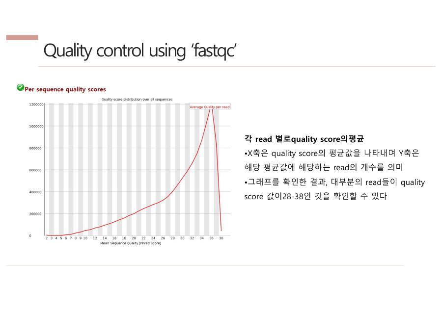

← 보드6장 QC → 얼라인먼트 → BAM · 2/14
QC — FastQC로 성적표 확인하기
QC (Quality Control, 품질 검사)
기계가 읽은 데이터가 분석에 쓸 만한지 확인하는 일이에요. 도구는 FastQC이고, 결과는 그래프가 가득한 성적표(HTML 파일)로 나와요.
QC는 얼라인먼트(정렬) 앞에서 해야 해요. 얼라인먼트 도구는 글자만 맞춰 볼 뿐 염기마다 붙은 품질 점수는 보지 않기 때문이에요.
비유
번역기는 흐릿하게 찍힌 사진 속 글자도 그대로 믿고 번역해요. 그래서 번역 전에 사진이 선명한지 사람이 먼저 확인해야 해요.
가장 중요한 그래프는 Per base sequence quality(위치별 염기 품질)예요.
- 가로 = 글자 위치(1~150번째), 세로 = 품질 점수(Q)
- 파란 선은 평균, 빨간 선은 중앙값, 노란 박스는 대부분(25~75%)이 모여 있는 범위예요.
- 점수가 높을수록 그 글자를 올바르게 읽었을 확률이 높아요. 예를 들어 Q30은 1000번 중 약 1번만 틀린다는 뜻이고, 보통 Q30 이상이면 쓸 만하다고 봐요.
교수님이 보여 주신 예에서는 대부분의 read 평균 점수가 28~38이었어요.

또 하나, ATGC 비율 그래프(Per base sequence content)가 있어요. 이건 "좋고 나쁨"이 아니라 목적에 따라 판단하는 그래프예요.
시험엔 이렇게 써요
QC는 시퀀싱 데이터(FASTQ)가 분석에 쓸 만한지 FastQC로 확인하는 단계이며, per base sequence quality 그래프로 위치별 품질을 본다. ATGC 비율은 WGS는 고르게, targeted는 고르지 않은 것이 정상이므로 목적에 따라 판단한다.
잠깐 확인 — Targeted sequencing 데이터에서 A·T·G·C 비율이 고르지 않아요. 문제일까요?
문제가 아니에요. 특정 유전자만 읽었으니 그 서열의 글자 구성대로 치우치는 게 정상이에요. 그래서 "목적에 따라 판단"해요.
다음 카드 → 뒤로 갈수록 품질이 떨어지는 이유 (서술형 단골)
자료: 4·6·7주차 · 3. NGS(리눅스) · 5. DNA variant 분석 · 라이프05·07·08